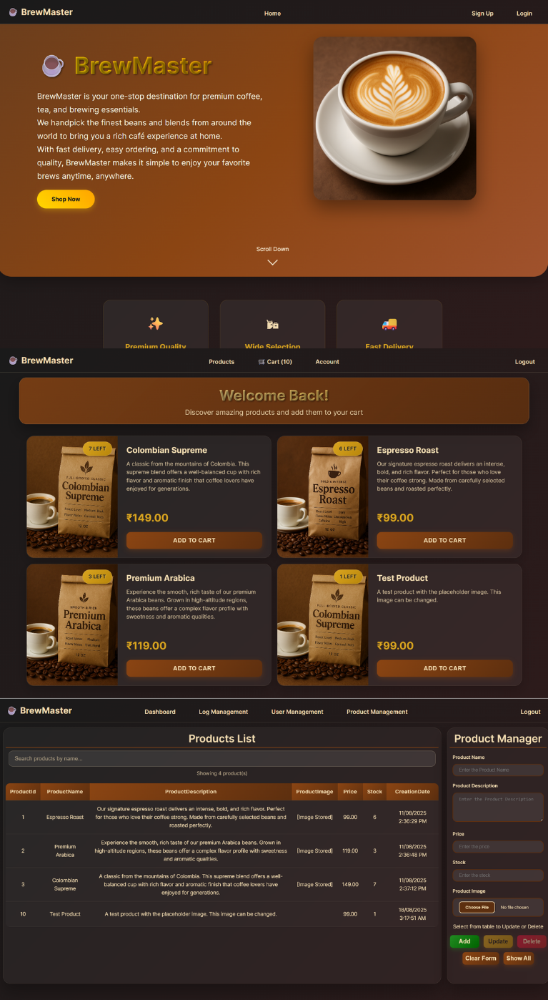

Online Retail Management System
GitHubBrewMaster – Full-Stack E-Commerce Platform
This flexible e-commerce system serves as a universal retail solution demonstrated here as a coffee store named BrewMaster. It handles the full scope of online business operations including secure customer transactions and real-time inventory management. The architecture prioritizes a smooth user experience while ensuring the platform remains scalable and data secure.
- Secured user data by implementing SHA256 hashing with unique salts and strictly enforced role-based access control to separate admin privileges from customer accounts.
- Streamlined operations with an AJAX-powered admin dashboard that supports live data table editing, autofill functionality, and binary image uploads without page reloads.
- Developed a synchronized shopping cart and checkout workflow that performs real-time SQL validations to manage stock levels and prevent inventory discrepancies.
- Saved audit trails and centralized error logs to capture detailed system events for improved transparency and quick debugging.
Full-Stack
C#
ASP.NET Core
SQL Server
jQuery/AJAX